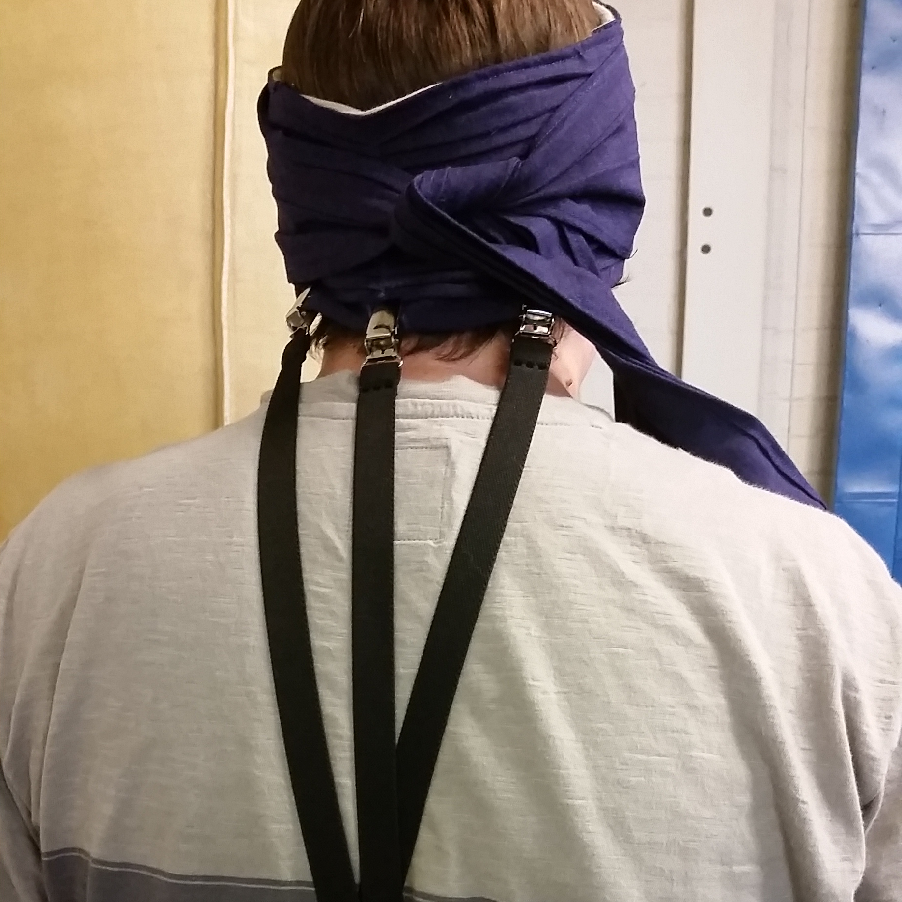
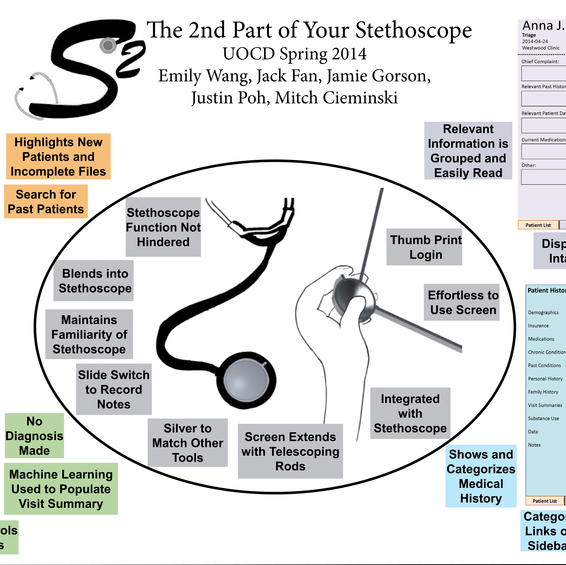
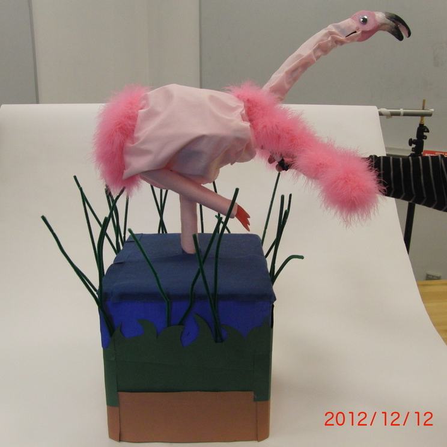
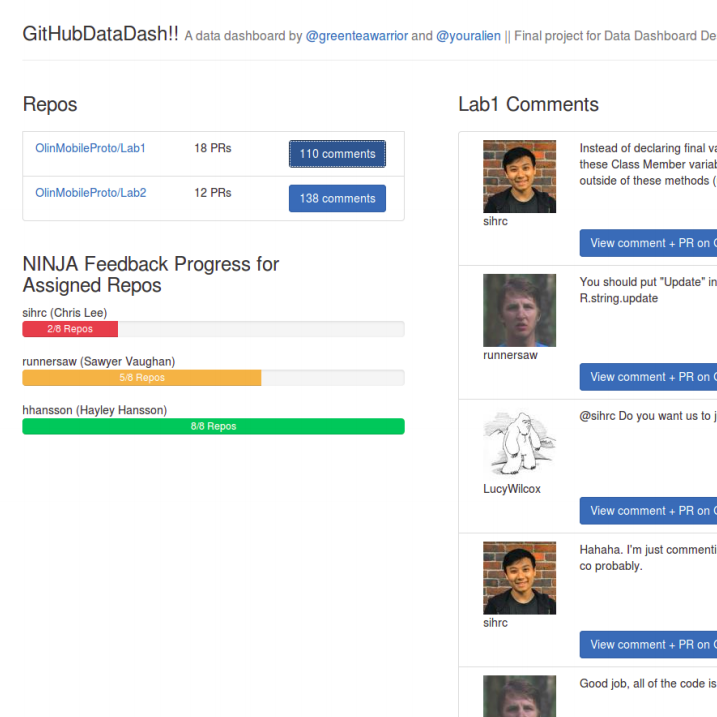
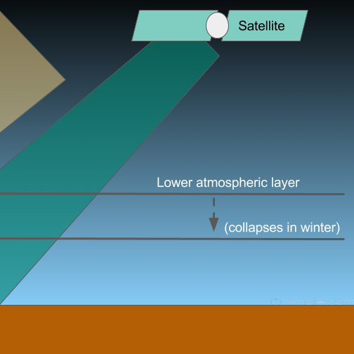
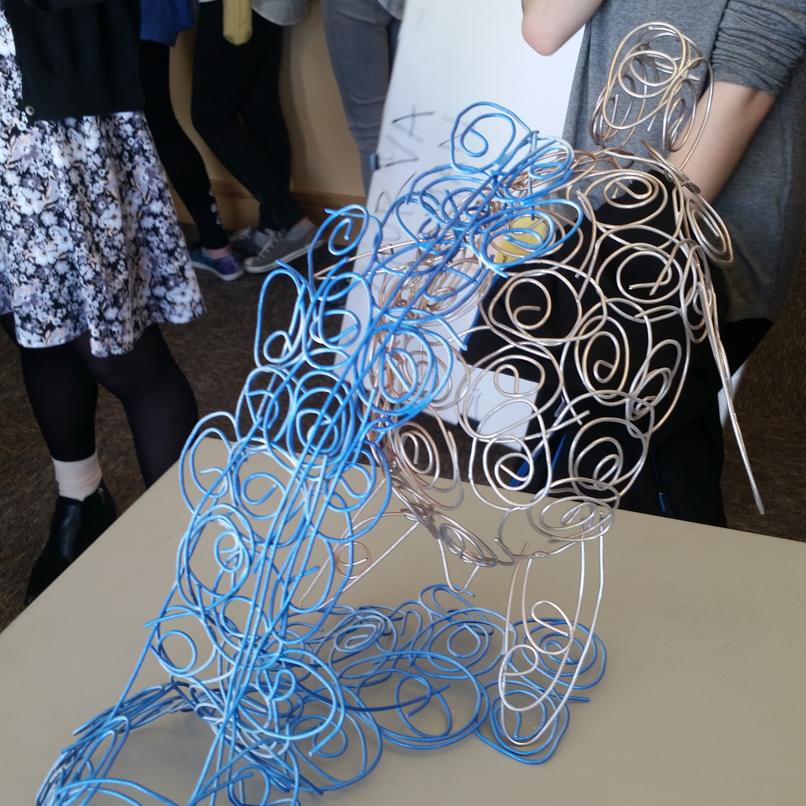
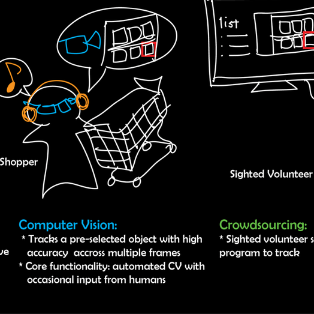
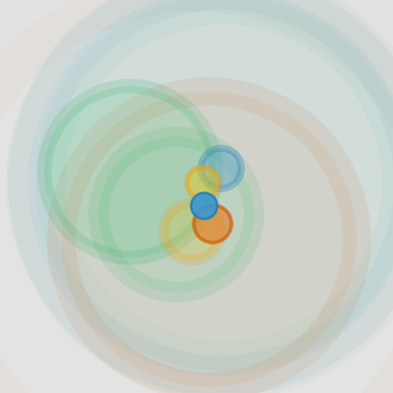
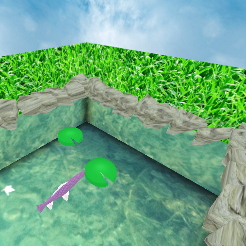

Heads Up @ open style lab
(Summer 2014 Open Style Lab Engineering Fellow) I collaborated with a fashion designer and occupational therapist to create assistive wearables for a client with EDS (Ehlers Danlos Syndrome).
Hi! I am a Technology and Social Behavior PhD student in the Inclusive Technology Lab at Northwestern University, where I am currently working on assistive/adaptive technology research and investigating interfaces for users of all abilities. My research is advised by Dr. Anne Marie Piper.
My process includes a lot of qualitative methods, user-centered design practices, and rapid prototyping. In every project, I make sure to frequently collaborate with individuals from communities of different abilities. These encounters inform the interfaces that we create, whether they be high-tech or low-tech, for practical or expressive purposes, personal or social, or any combination of the above. :-)
At the moment my research projects at Northwestern University are just getting started; I plan to include public updates on this website at a later time in the 2016-17 school year. Below are some projects from my time as an undergraduate student at Olin College of Engineering (class of 2016), where I pursued a self-designed engineering major with coursework in computer science, user-centered design, and psychology.

(Summer 2014 Open Style Lab Engineering Fellow) I collaborated with a fashion designer and occupational therapist to create assistive wearables for a client with EDS (Ehlers Danlos Syndrome).

(Spring 2014 User-Oriented Collaborative Design Semester Project) We designed a product that would have a high positive impact on the lives of volunteer physicians. This process involved nontrivial fieldwork (observations, interviews, codesign session artifacts) and design thinking techniques.

(Fall 2012 Design Nature Final Project) In approximately eight weeks, we created a bioinspired gameplay experience and fully functional prototypes of a flamingo based on the nonverbal communication behaviors of flamingos in the wild. The target audience was fourth graders from the local elementary school.

(Fall 2015 Data Dashboard Design Seminar Project) We prototyped a dashboard to help Olin's computing professors understand feedback on student's software projects. We visualized GitHub data from current Olin courses and aimed to make this dashboard a tool for future teaching teams!

(Spring 2016 Data Science Final Project) We collaborated with Olin faculty member Scott Hersey to investigate seasonal discrepancies between satellite-based and ground-based aerosol optical depth (AOD) measurements in South Africa with a series of data visualizations and analysis. The ramifications of this discrepancy could lead to misinformed scientific inquiry to the environmental state and societal health of South Africa.

(Spring 2016 Industrial Media Super Taster Seminar Final Project) This is a sculpture that I spot welded and finished with several shades of spray paint. The turtle is currently on display in a faculty office at Olin College.

(Summer 2014 Research Student at Olin College) I spent this summer in Dr. Paul Ruvolo's research group interviewing many individuals in the blind and visually impaired community in the Greater Boston Area and prototyping computer vision interfaces.

(Spring 2014 Berklee Music Therapy Hack) We made a computer-vision-based interface for users of all motion abilities to compose music through their movements.

(Fall 2015 Computer Graphics Final Project) I created a koi pond using the three.js wrapper for WebGL. I presented this projet at the Lovelace Colloqium 2015 at the University of Edinburgh and won the People's Choice Award.